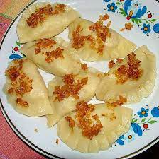

Pierogi

Description
Pierogi are filled dumplings made by wrapping unleavened dough around a savoury or sweet filling and cooking in boiling water. They are often pan-fried before serving.
- 2 cups of flour
- 1/2 teaspoon of salt
- 1 large egg
- 4 tablespoons of butter
- To make the dough: Mix together the flour and salt. Add the egg to the flour and combine. The dough will be quite clumpy at this stage.
- Work in the sour cream and soft butter until the dough comes together in a slightly rough, slightly sticky ball.
- Using just your fingertips, knead and fold the dough without adding additional flour until the dough becomes less sticky but still quite moist.
- Wrap the dough well in plastic wrap and refrigerate for 30 to 60 minutes, or up to 48 hours.